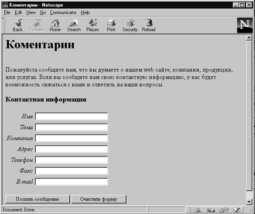

Интерактивные формы позволяют читателям Web-страниц легко общаться с их владельцами. Благодаря простоте использования тэга <mailto:> и форм стал возможен двусторонний диалог между владельцами Web-узлов и их читателями. Это открывает для Web-навигаторов увлекательные перспективы и коммерческие возможности. К сожалению, многие старые броузеры не поддерживают тэг <mailto:>.
Один из способов свести все трудности к минимуму состоит в том, чтобы разместить области ввода и выпадающие меню в левой части страницы, а весь сопроводительный текст - справа. Поскольку ширину областей ввода можно задать с помощыо атрибута SIZЕ=, вы по крайней мере выровняете строки слева, а текст справа будет невыровненным - как в большинстве документов. Такая форма выглядит несколько аккуратнее. Не забудьте оставить промежуток между текстом и областью ввода формы. Другой несколько более сложный способ - разместить элементы формы в ячейки таблицы. Это позволяет разместить сопроводительный текст слева, а области ввода справа. Это показано в примере.
<HTML>
<HEAD>
<TITLE>Коментарии</TITLE>
</HEAD>
<BODY>
<H1>Коментарии</H1>
<BR>Пожалуйста сообщите нам, что вы думаете о нашем web сайте, компании, продукции, или услугах.
Если вы сообщите нам свою контактную информацию, у нас будет возможность связаться с вами
и ответить на ваши вопросы.</p>
<FORM METHOD="POST" action="mailto: yourname@your.email.address">
<H3>Контактная информация</H3>
<TABLE BORDER="0">
<TR>
<TD ALIGN="right"><em>Имя</em></td>
<TD><input type="text" size="35" name="Name"></td>
</TR>
<TR>
<TD ALIGN="right"><em>Тема</em></td>
<TD><input type="text" size="35" name="Title"></td>
</TR>
<TR>
<TD ALIGN="right"><em>Компания</em></td>
<TD><input type="text" size="35" name="Company"></td>
</TR>
<TR>
<TD ALIGN ="right"><em>Адрес</em></td>
<TD><input type="text" size="35" name="Address"></td>
</TR>
<TR>
<TD ALIGN ="right"><em>Телефон</em></td>
<TD><input type="text" size="35" name="Telephone"></td>
</TR>
<TR>
<TD ALIGN ="right"><em>Факс</em></td>
<TD><input type="text" size="35" name="FAX"></td>
</TR>
<TR>
<TD ALIGN ="right"><em>E-mail</em></td>
<TD><input type="text" size="35" name="Email"></td>
</TR>
</TABLE>
<p><input type="submit" value="Послать сообщение">
<input type="reset" value="Очистить форму"> </p>
</FORM>
</BODY>
</HTML>

Рис. 1.27. Вид экрана броузера с формами
Щелкните здесь, чтобы просмотреть пример 1.26 в браузере
Возможно, это именно тот раздел, которого вы ждете - как
сделать так, чтобы формы отсылали на сервер введенные данные. На самом деле
заставить форму пересылать данные довольно просто. Главная проблема - понять,
куда их пересылать. Формально вы просто пишете в тэге <FORM> атрибут
АСТION= и задаете ссылку на URL программы, которая может обработать входные
данные и сделать с ними что-нибудь полезное.
А теперь проверим как усвоен
материал.